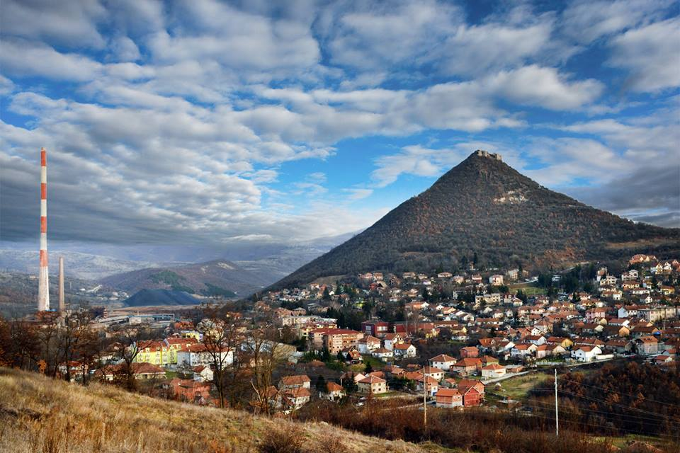

O gradu i tvrđavi
Zvečan je značajan rimski, vizantijski i srpski srednjovekovni grad i tvrđava na Kosovu i Metohiji, nedaleko od istoimenog naselja, severno od Kosovske Mitrovice, koji je smatran jednim od najjačih utvrđenja nemanjićke države.

Zvečan se nalazi u blizini ušća reke Sitnice u Ibar, na vrhu ugašene vulkanske kupe, koja se na visini od oko 800 metara uzdiže iznad reke Ibar. Sa kula tvrđave Zvečan se pruža pogled na Ibarsku klisuru, Kopaonik, Rogounu i ravnicu Kosova, a po vedrom danu se čak vidi i deo Metohije, oivičen snežno-belim vrhovima Šar planine. Svojim položajem na stenovitom kupastom uzvišenju, tvrđava Zvečan dominira dolinom u kojoj su se nekada ukrštali važni karavanski putevi /prema Kosovu i Metohiji na jugu, Ibrom za Moravsku dolinu ka severu i za Bosnu ka zapadu/, da bi kasnije služila i za zaštitu trepčanskih rudnika. Nije poznato kada je tvrđava Zvečan podignuta, jer postoje podaci o postojanju utvrđenja još iz praistorije i antičkog perioda.
Mnogi vladari su se smenjivali u Zvečanu, ali se prvi put pominje u pograničnim borbama Srba sa Vizantincima na Kosovu Polju između 1091. i 1094. godine. 1093. godine je Zvečan bio pogranična utvrda raškog zupana Vukana /kraj 11. veka/ koji je odavde kretao u svoje pohode na Kosovo, tada u sastavu Vizantije, da bi upravo u Zvečanu započeo mirovne pregovore sa vizantijskim carem Aleksijem I Komninom. Zvečanska tvrđava pada pod srpsku upravu 1170. godine, posle Bitke na Pantinu. Postoji zapis da je Stefan Nemanja, nakon pobede nad Vizantincima 1170. godine, naložio da se u crkvi Svetog Đorđa na Zvečanu održi služba za srećan ishod bitke.
U zvečanskoj tvrđavi se nalazio jedan od kraljevskih dvorova dinastije Nemanjić, a u njoj je svoj život, na misteriozan način, 11. novembra 1331. godine okončao Sveti kralj Stefan Dečanski. Sin Cara Dušana, Kralj Uroš je grad Zvečan dodelio čelniku Musi, zetu Kneza Lazara. Knez Vojislav Vojinović /oko 1355 - 1363/ ga je 1363. godine primorao da mu preda Zvečan u zamenu za Brvenik na Ibru, tako da se on od toga doba nalazi u njegovom posedu, odnosno njegovog naslednika velikog župana Nikole Altomanovića /1366 - 1373/, posle čega grad Zvečan ulazi u sastav države Vuka Brankovića. Upravu nad tvrđavom Zvečanom Turci su zauzeli neposredno posle kosovskog boja /1389. godine/, te je u njemu postojala stalna vojna posada do 18. veka, kada je grad napušten i prepušten zubu vremena.
Zvečanski Grad je bio napušten u 17. veku, da bi tokom austrijskog prodora na Balkansko poluostrvo, krajem 17. veka, ponovo imao osmanlijsku posadu, koja se jedino u njemu održala do 1689. godine, kada su Austrijanci, potpomognuti pobunjenim Srbima, prodrli do Skoplja, predvođeni pukovnikom Pikolonimijem...